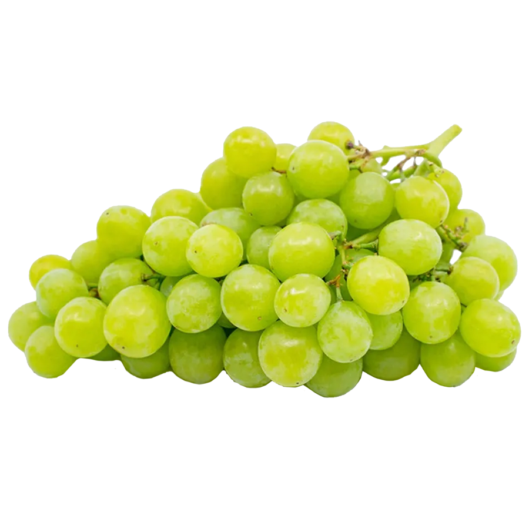
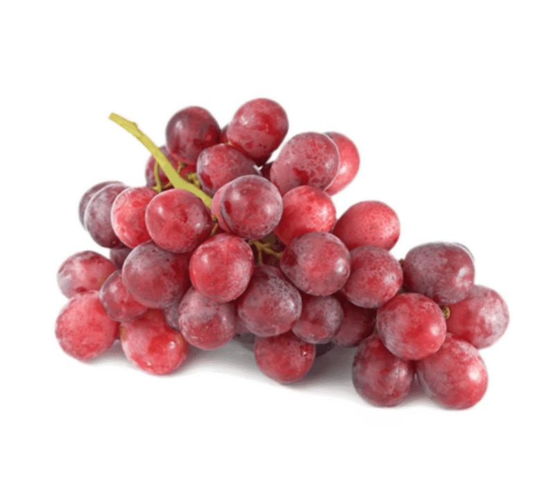

Lab 7 - Function Fun!
Challenge
With my partner Julia, we are going to be creating a fun grape-growing simulator with input from a lovely user such as yourself!
 Problems
Some minor synatx problems arose while coding, but we were able to meet up in person and go over them.
Reflection
Julia and I figured out this lab and totally made it work! Yay! Now we can make whole new kinds of wine too!